人类神系－穆罕瑞德 Mulhorandi Pantheon
当古代帝国伊马斯克瑞 Imaskari 从异世界掳来大量的奴隶之后，这些奴隶所信仰的神系变也随之传到费伦大陆之上。
【强大神力 Greater Power】
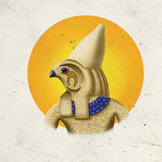
荷鲁斯-雷 Horus-Re （众神之首，太阳之神）
别称：太阳王 Lord of the Sun，复仇之主 Master of Vengeance，众神之王 Pharaoh of Gods
圣徽：
居住界域：太阳之殿 Heliopolis
阵营：守序善良 LG
神职：太阳 the sun，复仇 vengeance，正统 rulership，众王 kings，生命 life
信徒：统治者，法官，贵族，圣武士
牧师阵营：守序善良 LG，中立善良 NG，守序中立 LN
神域：善良 Good，守序 Law，贵族 Nobility，报应 Retribution，太阳 Sun
喜好武器：生命之环 An ankh（寇派斯弯刀 khopesh-穆罕瑞德地区的特殊弯刀）
注：就是神鬼传奇中埃及武器所持的半月型弯刀
【中等神力 Intermediate Power】
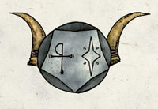
伊希丝 Isis （爱情与自然女神）
别称：慷慨的女士 Bountiful Lady，江河女士 Lady of Rivers，迷人之女 Mistress of Enchantment
圣徽：以月亮为背景的生命之环与星辰
居住界域：太阳之殿 Heliopolis
阵营：中立善良 NG
神职：天候 weather，河流 rivers，农业 agriculture，爱情 loves，婚姻 marriage，善良魔法 good magic
信徒：秘术施法者，德鲁伊，恋人，母亲
牧师阵营：守序善良 LG，中立善良 NG，混乱善良 CG
神域：家庭 Family，善良 Good，魔法 Magic，风暴 Strom，水 Water
喜好武器：生命之环与星辰 An ankh and star（拳匕 punching dagger）
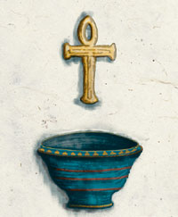
涅芙缇丝 Nephthys （财富与死者的守护女神）
别称：商业与财富之卫 Guardian of Wealth and Commerce，死者守护神 Protector of the Dead，复仇之母 the Avenging Mother
圣徽：金色的圣碗，其上为漂浮的生命之环
居住界域：太阳之殿 Heliopolis
阵营：混乱善良 CG
神职：财富 Wealth，贸易 Trade，守护孩童与死者 protector of children and the dead
信徒：商人，兑钱商，税吏，盗贼
牧师阵营：中立善良 NG，混乱善良 CG，混乱中立 CN
神域：混乱 Chaos，善良 Good，保护 Protection，贸易 Trade
喜好武器：拖曳着金色薄雾的生命之环 An ankh trailing a golden mist（鞭子 whip）
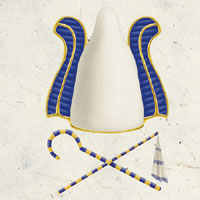
奥赛利斯 Osiris （死亡与正义之神）
别称：自然之王 Lord of Nature，死者判官 Judge of the Dead，庄稼收割者 Reaper of the Harvest
圣徽：白色的法老王冠，其下为交叉的连枷与拐杖
居住界域：太阳之殿 Heliopolis
阵营：守序善良 LG
神职：作物 vegetation，死亡 death，死者 the dead，正义 justice，收成 harvest
信徒：律师，德鲁伊，书记，法官，圣武士，游侠，寻求正义者
牧师阵营：守序善良 LG，中立善良 NG，守序中立 LN
神域：善良 Good，守序 Law，植物 Plant，长眠 Repose，报应 Retribution
喜好武器：正义之酬 Just Reward（轻型或重型连枷 light or heavy flail）
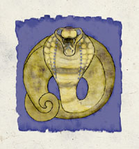
赛特 Set （邪恶与毁灭之神）
别称：亵渎死亡者 Defiler of the Dead，腐尸之王 Lord of Carrion，胡狼之父 Father of Jackals
圣徽：盘绕的昂首眼镜蛇
居住界域：太阳之殿 Heliopolis
阵营：守序邪恶 LE
神 职：沙漠 the desert，毁灭 destruction，旱灾 drought，夜晚 night，腐化 rot，蛇 snakes，憎恨 hate，背叛 betrayal，邪恶魔法 evil magic，野心 ambition，毒药 poison，谋杀 murder
信徒：刺客，暗黑卫士，抢匪，罪犯，盗贼，盗墓者，法师
牧师阵营：守序中立 LN，守序邪恶 LE，中立邪恶 NE
神域：风 Air，黑暗 Darkness，邪恶 Evil，憎恨 Hatred，守序 Law，魔法 Magic，鳞种 Scalykind
喜好武器：黑暗之矛 The Spear of Darkness（长矛、短矛或半身矛 longspear、shortspear or halfspear）
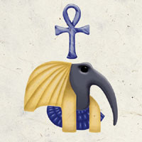
索斯 Thoth （知识之神）
别称：魔法之王 Lord of Magic，众神中的书记 Scribe of the Gods，知识保存者 the Keeper of Knowledge
圣徽：朱鹭头，其上为生命之环
居住界域：太阳之殿 Heliopolis
阵营：绝对中立 N
神职：中立魔法 Nature magic，抄写 scribes，知识 knowledge，创造 creation，秘密 secrets
信徒：博学者，书记，魔法物品制造者，法师
牧师阵营：中立善良 NG，守序中立 LN，绝对中立 N，混乱中立 CN，邪恶中立 NE
神域：工艺 Craft，知识 Knowledge，魔法 Magic，符文 Rune，法术 Spell
喜好武器：知识保存者 Knowledge Keeper（长木杖 quarterstaff）
【弱等神力 Lesser Power】
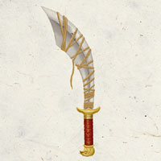
安荷 Anhur （战神）
别称：众神中的将军 General of the Gods，强壮的战士 Champion of Physical Prowess，战争之隼 the Falcon of War
圣徽：
居住界域：太阳之殿 Heliopolis
阵营：混乱善良 CG
神职：战争 War，冲突 conflict，肉体的健壮 physical prowess，雷电 thunder，暴雨 rain
信徒：德鲁伊，战士，武僧，游侠，士兵
牧师阵营：中立善良 NG，混乱善良 CG，混乱中立 CN
神域：混乱 Chaos，善良 Good，力量 Strength，风暴 Storm，战争 War
喜好武器：战鹰 Warhawk（弯刃大刀 falchion）
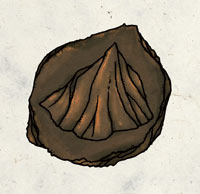
杰柏 Geb （大地之神）
别称：地底财富之王 King of the Riches Under the Earth，位于天底与砂土下的父亲 Father Under the Skies and Sands
圣徽：山脉
居住界域：太阳之殿 Heliopolis
阵营：绝对中立 N
神职：大地 The earth，矿工 miners，矿藏 mines，矿物资源 mineral resources
信徒：土裔，战士，矿工，铁匠
牧师阵营：中立善良 NG，守序中立 LN，绝对中立 N，混乱中立 CN，中立邪恶 NE
神域：洞穴 Carven，工艺 Craft，土 Earth，保护 Protection
喜好武器：石之盖 Stonemantle（长木杖 quarterstaff）
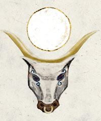
哈索尔 Hathor （慈爱女神）
别称：哺养万物的母亲 The Nurturing Mother
圣徽：头顶月徽的长角母牛头
居住界域：太阳之殿 Heliopolis
阵营：中立善良 NG
神职：母性 Motherhood，民族音乐 folk music，舞蹈 dance，月亮 the moon，命运 fate
信徒：吟游诗人，舞者，母亲
牧师阵营：守序善良 LG，中立善良 NG，混乱善良 CG
神域：家庭 Family，命运 Fate，善良 Good，月亮 Moon
喜好武器：长母牛角 Long cow horns（短剑 short sword）
【微弱神力 Demogod】
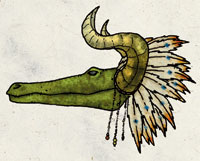
赛贝克 Sebek （鳄鱼之神）
别称：鳄鱼之王 Lord of Crocodiles，含笑之死 Smiling Death
圣徽：长角与戴着羽毛头饰的鳄鱼头
居住界域：太阳之殿 Heliopolis
阵营：中立邪恶 NE
神职：危险的湍流 river hazards，鳄鱼 crocodiles，鳄鱼人 werecrocodiles，湿地 wetlands
信徒：德鲁伊，鳄鱼栖息地的住民，游侠，鳄鱼人
牧师阵营：守序中立 LN，混乱中立 CN，中立邪恶 NE
神域：动物 Animal，邪恶 Evil，鳞种 Scalykind，水 Water
喜好武器：哀愁之矛 The Sorrowful Spear（长矛、短矛或半身矛 longspear、shortspear or halfspear）
穆罕瑞德众神群像 1
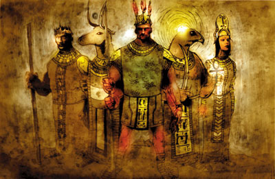
由左至右为
大地之神 杰柏 [弱等神力]
慈爱女神 哈索尔 [弱等神力]
战神 安荷 [弱等神力]
太阳神 荷鲁斯-雷 [强大神力]
爱情与自然女神 伊希丝 [中等神力]
穆罕瑞德众神群像 2
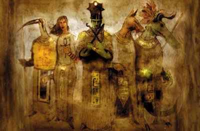
由左至右为
知识之神 索斯 [中等神力]
财富与死者的守护女神 涅芙缇丝 [中等神力]
死亡与正义之神 奥赛利斯 [中等神力]
邪恶与毁灭之神 赛特 [中等神力]
鳄鱼之神 赛贝克 [微弱神力]